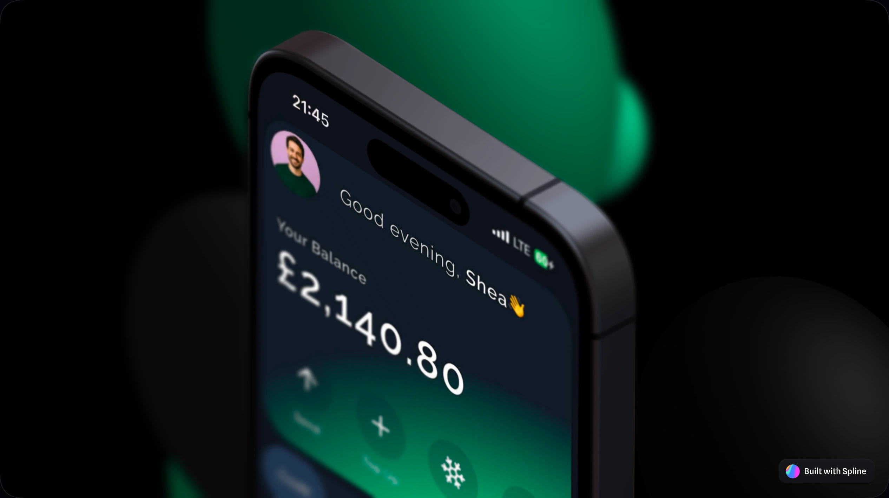

Cipher
Your finances, finally made clear with AI.
- Role
- Brand, website and app design
- Client
- A concept, at Ulster University
Cipher is a digital-first banking app built around AI. No physical card, just a glass card, crypto wallets, and an AI assistant called Ci that actually learns how you spend. The brand, the app, and the website were all designed from scratch.
Introducing Ci
Prototyped in Relume AI to establish the structure, then taken into Figma and finished with Spline interactions. The landing page introduces Ci, walks through the key features, and drives sign-up.

Ci handles the thinking
Dark, immersive, with a glass card at the centre. Ci lives inside the app to answer questions, flag subscriptions, and predict cashflow. It adapts to how you actually use money. Everything else is there too: crypto, savings goals, spending limits, instant transfers.

The mark comes from Ci
Raleway typeface, electric green on navy, and a tone that’s confident without being corporate.